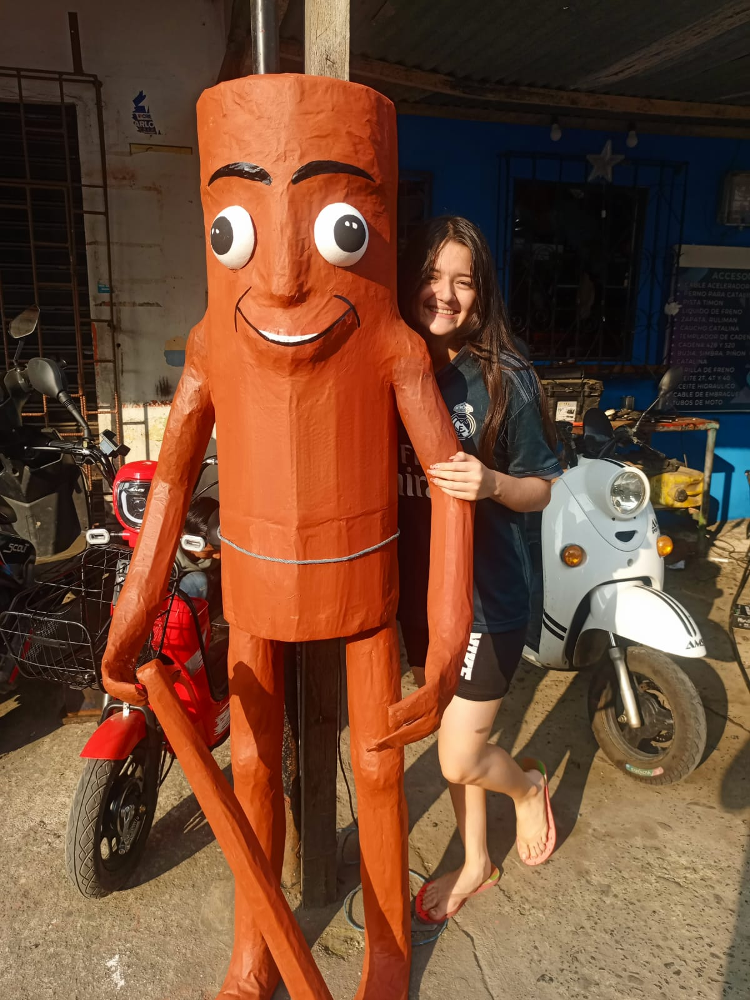
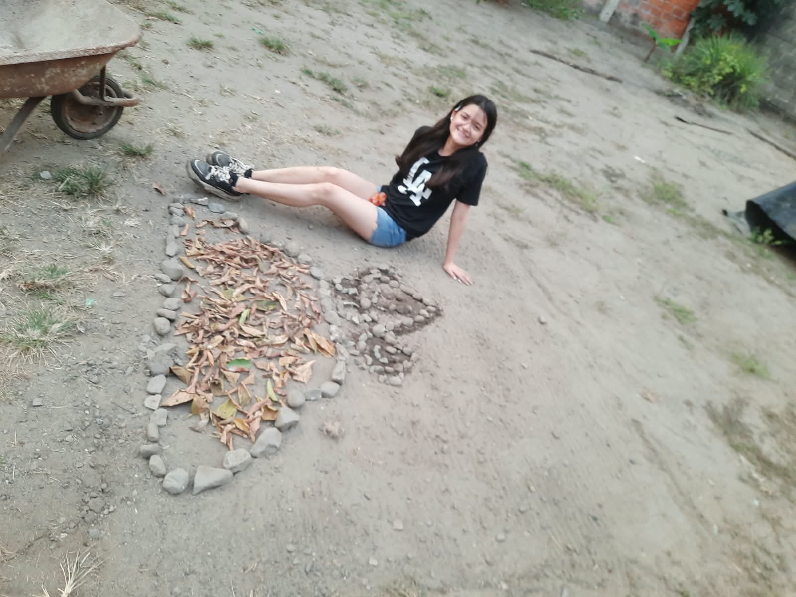
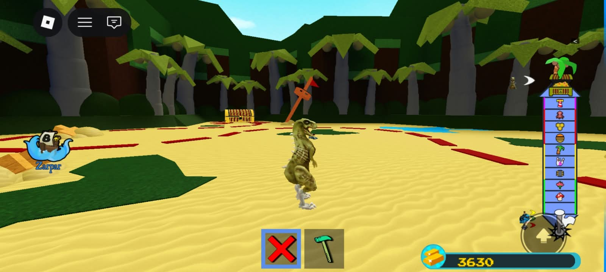
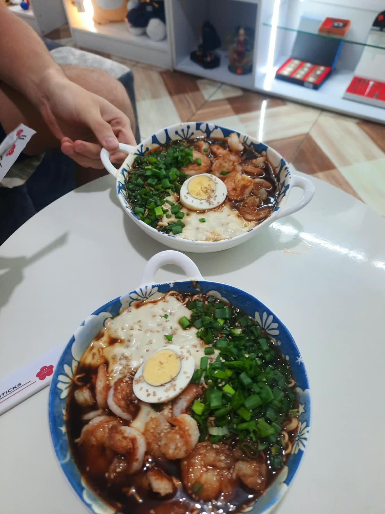
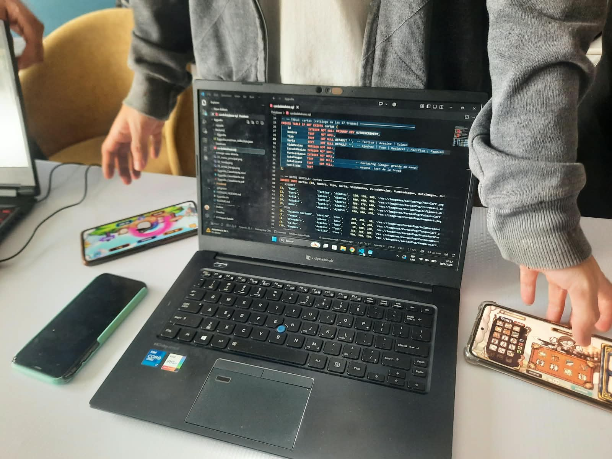

Hola soy Dominique, una chica de 18 años a punto de graduarse que quiere compartir contigo...

Conocer cómo somos y qué seremos en el futuro es una parte fundamental e indispensable para poder construir una verdadera conciencia sobre nuestra propia vida y nuestras metas.
Tengo 18 años y hoy puedo decir con mucha tranquilidad que vivo una adolescencia libre, sin culpas y con la plena capacidad y libertad de tomar mis propias decisiones.

Cometer errores es una parte natural de la vida porque somos jóvenes que apenas estamos aprendiendo a entender el mundo adulto y las consecuencias de nuestros actos; por eso, a mi parecer, es tan valioso saber escuchar y aprovechar los consejos de nuestra familia y amigos.
Cada persona tiene su propia manera de vivir su libertad: a algunos les gusta salir a fiestas y a otros nos gustan actividades distintas, pero lo verdaderamente importante en esta etapa es aprender a conocernos a nosotros mismos.

A través de todo lo que he vivido he aprendido que debemos ser capaces de crear nuestra propia conciencia, y es algo de lo que hablo con total seguridad porque lo digo desde mi propia experiencia.
En muchas ocasiones caemos en la idea de que debemos cambiar o imitar a otra gente para poder encajar y terminamos haciendo cosas que no queremos, pero tener claro quiénes somos es la clave fundamental para no dejaros llevar por los demás.

Soy una adolescente a la que le gusta mucho leer, jugar videojuegos y que no disfruta salir a fiestas, pero me siento feliz porque sé exactamente lo que me gusta y lo que no, gracias a que me he tomado el tiempo de conocerme.
Ya me va a tocar empezar una etapa completamente nueva como ir a la universidad, y sé perfectamente que quiero estudiar una ingeniería, además de que disfruto muchísimo comer bastante y compartir esos momentos.

Saber tomar nuestras propias decisiones y asumir responsablemente las consecuencias es algo completamente necesario para poder prevenir embarazos no planificados y decidir mantenernos en abstinencia según nuestras convicciones.
Tal como nos lo dicen siempre, es mejor no saltarnos ninguna etapa de la vida; por eso prefiero seguir disfrutando de estudiar, leer y conocerme primero a mí misma antes de ceder a presiones o hacer cosas que realmente no deseo.
Dominique